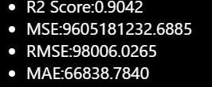

"Old Car Price Prediction" is a Machine Learnig Web Application created using Flask framework. It is ML model trained on the data of old cars, details of data given in the section about dataset. This is a Supervised Machine Learning based Regression Model, which is trained using RandomForestRegressor algorithm with the highest R2 Score 0.9042 compared to all other Regression Algorithms.
This model takes some inputs like : Car Name, Age of Car, Kilometer Drivern, Way of Selling, Fuel Type, Transmission Type, Mileage, Engine Power, Maximum Power and Total Number of Seats for all entered values based on the data on which model is trained it predicts the "Selling Price".
Here are some more details of model :
